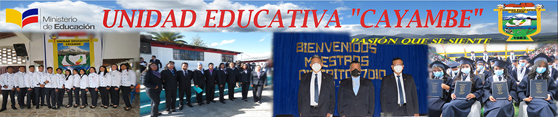
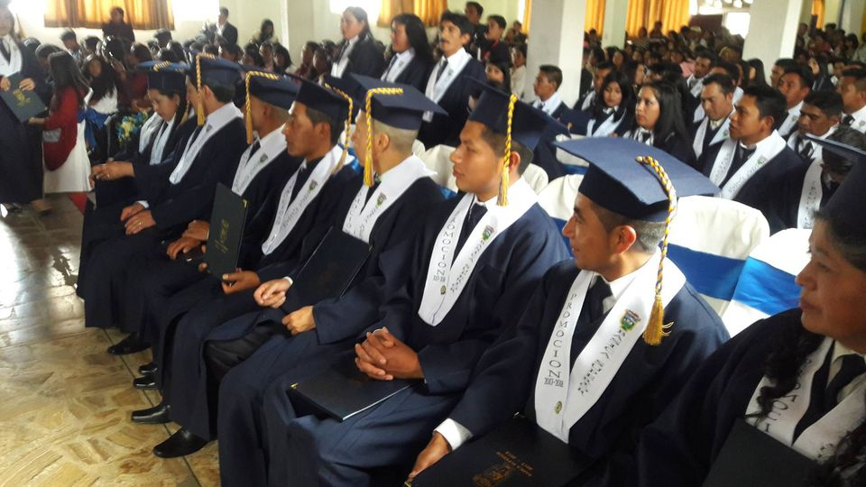

Bachillerato en Producciones Agropecuarias
Bachillerato Técnico productivo
Bachillerato en Programación de Software
Semipresencial P.C.E.I(Fin de semana)
En este bachillerato técnico a parte de las materias elementales del tronco común también se encontrara materias que son especializadas en la informática, es decir que se trabaja con los equipos de cómputo. Siendo guiados por un personal altamente calificado para esta especialidad, con laboratorios en buen estado. Este a diferencia del bachillerato ciencias, los estudiantes laboran en la jornada matutina con horario de 07H00 hasta las 13H00.

ESPECIALIDAD PRODUCCIONES AGROPECUARIA
En este bachillerato también existen las materias del tronco común, pero a diferencia de las ciencias y el informático este se especializa más en lo agropecuario es decir al cuidado de plantas y animales. Las practicas son en los terrenos de la institución para un mejor aprendizaje del estudiante, Los estudiantes serán guiados por un personal altamente calificado en el área de agropecuaria.

En el área que cubren las materias troncales, el bachillerato de Ciencias permite acceder a estudios de Biología, Química, Física y Matemáticas. Este bachillerato cuenta con las materias esenciales del tronco común que todos los estudiantes de la institución reciben en el bachillerato ciencias y al igual que la educación básica también acuden a la institución en jornada vespertina con el mismo horario.
Este bachillerato esta unificado con la institución se especializa en la producción de alimentos de forma técnica.

El inicial se divide en dos subniveles, el inicial 1, que no es escolarizado y comprende infantes de hasta 3 años de edad. Y el inicial 2, niños de 3 a 5 años
Corresponde a 8.º, 9.º y 10.º grados de Educación General Básica y preferentemente se ofrece a los estudiantes de 12 a 14 años de edad., la jornada de trabajo es de 1pm a 6pm.
Bachillerato en Programación de Software
En este bachillerato técnico en Programación de Software a parte de las materias elementales del tronco común también se encontrará materias que son especializadas en la informática, es decir que se trabaja con los equipos de cómputo. Siendo guiados por un personal altamente calificado para esta especialidad, con laboratorios en buen estado. Este a diferencia del bachillerato ciencias, los estudiantes laboran en la jornada matutina con horario de 07H00 hasta las 13H00.
Semipresencial P.C.E.I(Fin de semana)
Este bachillerato esta mas acorde para personas mañores de 18 años que no han culminado los estudios y quieren culminarlos, el horario es solo Sábados y Domingos, las materias que estudian son las del tronco común.
Este bachillerato esta mas acorde para personas mañores de 18 años que no han culminado los estudios y quieren culminarlos, el horario todos los dias (Lunes-Viernes) de las 6pm hasta las 10pm, las materias que estudian son las del tronco común.

- Dirección Panamericana Sur Km 2 1/2 via Cayambe - El Quinche, Cayambe, Ecuador-
- Telefonos 216-598
- Email:uecayambe@gmail.com
- Pagina Web https://sites.google.com/view/unidadeducativacayambe
- Elaborado:Jhomayra Jitala-Francis Tuquerres